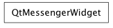

Bases: enaml.core.declarative.Declarative
The base class of all widget classes in Enaml.
This extends Declarative with the ability to send and receive commands to and from a client.
The session object to use for sending messages to the client. This will be initially set by the Session object when it takes ownership of the view. It should not typically be changed by user code. Only a weakref to the Session object is stored.
The unique messaging identifier for this widget. It is generated automatically and should not typically be changed by user code.
A loopback guard which can be used to prevent a loopback cycle of messages when setting attributes from within a handler.
Apply the session object to this component and its subtree.
This method will be called by the Session object when it takes ownership of the view. If may be called later by child change handlers to make sure the whole tree is operating on the same session. This method should not typically be called by user code.
| Parameters: | session (Session) – The Session object which should be used by this view. |
|---|
Handle an action sent from the client of this widget.
This is called by the widget’s Session object when the client of the widget sends a message to this widget.
| Parameters: |
|
|---|
Send an action to the client of this widget.
This method can be called to send an unsolicited message of type ‘widget_action’ to the client of this widget.
| Parameters: |
|---|
A method which should be called when preparing a widget for publishing.
The intent of this method is to allow a widget to hook up its trait change notification handlers which will send messages to the client. It’s assumed that this method will only be called once by the object which manages the process of preparing a widget for communication.
A convenience method provided for subclasses to use to publish an arbitrary number of attributes to the client widet.
The action for the message is created by prefixing ‘set-‘ to the name of the changed attribute. This method is not intended to meet the needs of all attribute publishing. Rather it is meant to handle most of the simple cases. More complex cases will need to implement their own dispatching handlers.
A convenience method provided for subclasses to set a sequence of attributes from within a loopback guard.
alias of __NoInterface__

Bases: object
The base class of the Qt widgets wrappers for a Qt Enaml client.
Initialize a QtMessengerWidget
| Parameters: |
|
|---|
Handle an action sent from the server widget
This is called by the QtClientSession object when the server widget sends a message to this widget.
| Parameters: |
|
|---|
Send an action to the server widget.
This method can be called to send an unsolicited message of type ‘widget_action’ to the server widget for this widget.
| Parameters: |
|---|
Lazily creates and returns a LoopbackGuard for convenient use by subclasses.
Get the parent of this messenger widget.
| Returns: | result (QtMessengerWidget or None) – The parent of this messenger widget, or None if it has no parent. |
|---|
Get the children of this widget.
| Returns: | result (list) – The list of children of this widget. This list should not be modified in place by user code. |
|---|
Add a child widget to this widget.
| Parameters: | child (QtMessengerWidget) – The child widget to add to this widget. |
|---|
Insert a child widget into this widget.
| Parameters: |
|
|---|
Remove the child widget from this widget.
| Parameters: | child (QtMessengerWidget) – The child widget to remove from this widget. |
|---|
Find the child with the given widget id.
| Parameters: | widget_id (str) – The widget identifier for the target widget. |
|---|---|
| Returns: | result (QtMessengerWidget or None) – The child widget or None if its not found. |
Get the toolkit widget for this messenger widget.
| Returns: | result (QWidget) – The toolkit widget for this messenger widget, or None if it does not have a toolkit widget. |
|---|
Get the widget id for the messenger widget.
| Returns: | result (str) – The widget identifier for this messenger widget. |
|---|
A method which must be implemented by subclasses.
This method is called by the create(...) method. It should create and return the underlying Qt widget. Implementations of this method should not call the superclass version.
| Parameters: |
|
|---|
A method called by the application when creating the UI.
The default implementation of this method calls ‘create_widget’ and assigns the results to the ‘widget’ attribute, so subclasses must be sure to call the superclass method as the first order of business.
This method is called by the application in a top-down fashion.
| Parameters: | tree (dict) – The dictionary representation of the tree for this object. |
|---|
A method that allows widgets to do layout initialization.
This method is called after all widgets in a tree have had their ‘create’ method called. It is useful for doing any initialization related to layout.
The default implementation of this method is a no-op in order to be super() friendly.
This method is called by the application in a bottom-up order.
Destroy this widget.
list of weak references to the object (if defined)